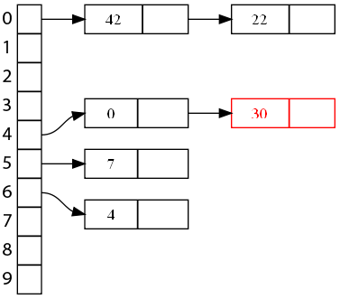
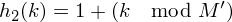

Bonjour à tous et bienvenue dans ce modeste tutoriel ! Aujourd'hui nous allons explorer et décortiquer une structure de donnée particulière : les tables de hachage ! Au programme : à quoi cela sert, comment cela fonctionne, une rapide analyse sur les temps d'exécutions et en prime une implémentation en Java (que le monde est bien fait :p ).
Bonne lecture !
Note : j'ai choisi Java comme langage par facilité et afin de donner des pistes simples d'accès vers un autre langage comme le C ou le C++. Il faut savoir que Java intègre déjà du code pour les tables de symbole (notamment une interface), et même une implémentation. Nous n'allons pas aborder ces objets existants, vu que le but est de comprendre et recréer les mécanismes internes en partant de rien ;) .
Avant de commencer, un petit rappel sur le type de donnée abstrait que sont les tables de symboles. Le but du jeu est en fait de stocker des paires "clé-valeur" et de pouvoir y accéder efficacement, en utilisant seulement la clé. Un exemple sera plus parlant :) .
Imaginez un répertoire dans un téléphone portable : la clé serait le nom du contact tandis que la valeur serait le numéro de téléphone. Ou encore un dictionnaire, où vous associez un mot à une définition. Dans les deux cas, vous cherchez une clé (un nom/mot) pour retrouver une information (le numéro de téléphone/la définition).
(Avouez-le, vous êtes jaloux de ne pas avoir Chuck Norris dans vos contacts :p .)
Autre exemple, qui parlera plus aux webmasters et programmeurs PHP : les news des sites web. Chacune possède un numéro d'identification unique qui permet de les distinguer, c'est la clé (le fameux champ 'id' du tutoriel de M@teo21), le reste de la news (titre, contenu, etc) étant la valeur associée. Pour les autres qui ne voient pas trop de quoi je parle, vous pouvez également penser au PID que les systèmes d'exploitation assignent aux programmes chargés en mémoire.
(Extrait de phpMyAdmin.)
Map ou dictionnaire ?
C'est ici que parmi les tables de symboles on distingue deux types : les tables associatives (maps en anglais) et les dictionnaires. Ce sont exactement les mêmes structures avec une légère différence (mais de taille !) : les clés des maps sont uniques tandis que celles d'un dictionnaire ne le sont pas nécessairement. Cela peut paraître anodin, mais dans nos exemples c'est hyper important !
Ainsi, le répertoire téléphonique est un dictionnaire : vous pourriez très bien avoir deux contacts qui portent le même nom, mais qui ont des numéros différents. Ou bien vous pourriez associer à une même personne plusieurs numéros, par exemple son téléphone fixe et son téléphone portable. Un dictionnaire est également un... dictionnaire ( :D ) puisque certains mots peuvent avoir plusieurs significations.
A l'opposé, l'unicité des id des news d'un site et des PIDs est primordiale ; imaginez que deux news possèdent le même id, comment savoir laquelle consulter ? Cela serait pire avec les PIDs ; si vous voulez terminer un programme avec un PID qui n'est pas unique, comment faire la différence ?
Mode d'emploi
Définissons à présent l'interface d'une table de symbole, autrement dit ce que l'on peut faire avec ; on a les méthodes suivantes :
put(clé, valeur) : permet d'ajouter une paire "clé-valeur" ;
get(clé) : comme son nom l'indique, retourne la valeur associée à une clé ;
remove(clé) : je ne vous le cache pas plus longtemps, supprime une paire ;
contains(clé) : retourne vrai si la clé se trouve dans la table, faux sinon ;
size() : retourne le nombre de paires entrées dans la table.
Voici l'interface Java que nous nous amuserons à implémenter par la suite :
public interface SymbolTable
{
public void put(int key, Object value) throws HashTableException;
public Object get(int key) throws HashTableException;
public void remove(int key) throws HashTableException;
public boolean contains(int key);
public int size();
}
public class HashTableException extends Exception
{
public HashTableException() { super() ; }
public HashTableException(String s) { super(s); }
}
Implémentations
Il existe plusieurs manières d'implémenter ces méthodes : on peut citer un tableau, une liste liée, un arbre, ou encore... une table de hachage :) .
Pour maintenir le suspens, nous n'allons parler des temps d'exécution qu'à la fin de ce tutoriel, car les tables de hachage ont des performances extrêmement variables selon les situations, notamment à cause du mécanisme interne utilisé. Quand nous aurons vu les manières de concevoir une table de hachage, vous comprendrez tout de suite ;) .
Rentrons enfin dans le vif du sujet : que sont ces fameux tables de hachage ? Derrière ce nom un peu barbare se cache un mécanisme très simple : les paires "clé-valeur" sont placées dans un tableau de manière efficace. En fait, au lieu de les ajouter l'une après l'autre comme on aurait tendance à faire dans un tableau, on va les éparpiller le plus uniformément possible.
Un peu de vocabulaire : le tableau porte généralement le nom de bucket array tandis que les cases, vides ou occupées, sont les buckets.
Bien évidemment, on ne va pas les mettre n'importe comment, sinon on ne saura plus les retrouver :p . Les indices de chaque paire sont déterminés par le hach code de la clé, qui est donné par une fonction de hachage. Oui, je sais, ces mots font peur, mais vous verrez que ce n'est pas si terrible que ça !
Une histoire de hach code
Pour faire simple, le hach code d'un objet ou d'une variable est un entier qui lui est associé et qui est idéalement propre à chaque élément. C'est le résultat d'une fonction de hachage, on dit qu'elle hache l'élément.
On pourrait faire tout un cours sur les fonctions de hachage (Artefact2 en a même fait un tutoriel), mais pour rester simple une bonne fonction de hachage (que l'on va appeler
dans le reste de ce tutoriel) doit respecter les deux conditions suivantes :
si deux clés sont identiques, leur hachage l'est aussi ; si
, alors
;
les hach codes doivent être tous uniques ; si
, alors
La première condition est obligatoire, mais est assez facile à faire respecter, tandis que la seconde est beaucoup plus difficile à mettre en pratique (surtout dans le cas des tables de hachage).
En effet, les tables de hachage utilisent le hach code pour placer une paire dans un tableau, mais ce code peut potentiellement prendre n'importe quelle valeur (généralement de
à
). Il va donc falloir le compresser, c'est-à-dire le borner aux indices du tableau. On utilise pour cela une fonction de compression (que l'on va ici noter
). Ainsi, l'indice d'un élément i, qui sera donné par la fonction
, est défini ainsi :
Par exemple, imaginons que j'ajoute le numéro de téléphone Jean-Paul Belmondo (pourquoi pas ^^ ). L'ajout se déroulera selon le schéma ci-dessous.
Exemple avec des chiffres
Illustrons le mécanisme que nous allons implémenter avec un petit exemple numérique, cela ne sera pas de trop ;) . Imaginons que l'on dispose des fonctions suivantes :
On aimerait insérer les clés suivantes dans un tableau de 10 cases (les valeurs associées n'ont ici pas beaucoup d'importance, on va les laisser de côté) : 0, 4, 7 et 42(soyons fous :p ). En sortant la calculette, on obtient les résultats ci-dessous :
Tout paraît si beau, et pourtant un problème de taille peut survenir. Reprenons notre exemple, et imaginons que l'on veut insérer la clé 22. On a
et
, et c'est la cata : l'indice 0 est déjà occupé par 42 !
Lorsque deux clés différentes sont envoyées sur la même case, on dit qu'il y a collision, et il va falloir les gérer car plus le tableau sera rempli plus il y aura de chances d'en avoir une !
Plusieurs manières existent ; nous n'allons en voir que trois, très différentes mais faciles à implémenter :
le sondage ;
le double hachage ;
le chaînage linéaire.
Des noms qui font peur, mais vous verrez ce n'est pas si difficile ;) .
Le sondage linéaire
Le principe
Appelé probing en anglais, cette méthode est la plus intuitive : si on a une collision, à partir de l'indice, on parcourt le tableau jusqu'à trouver une case libre ! Les indices parcourus peuvent être écrits sous la forme suivante, avec M la taille du tableau,
la fonction de hachage-compression, et i un indice qui varie de 0 à M :
Ainsi, pour placer 22, vu que la case à l'indice 0 est occupée, on va vérifier en 1. C'est vide, on l'y insère !
Ajoutons la clé 30 ; on a
et
. La case 4 est occupée, on parcourt alors les indices jusqu'à trouver une case libre. La première case libre est en 7, on y met 30 !
Pour rechercher une clé, c'est le même principe : on va calculer son indice, puis on va descendre dans le tableau jusqu'à trouver la clé. Si on tombe sur une case vide, c'est que la clé n'existe pas (sinon on l'aurait rencontrée en chemin), idem si on revient au point de départ.
Une petite subtilité : la suppression
L'insertion de clés est relativement simple, mais c'est la suppression qui est délicate et qui peut rendre inefficace la recherche. Comme dit plus haut, on va descendre dans le tableau jusqu'à trouver la clé ou une case vide... Si la suppression rend une case vide sur le "chemin" à parcourir, alors on perdra l'accès à certaines clés !
Par exemple, imaginons qu'on supprime purement et simplement la clé 7 qui est à l'indice 5, après avoir inséré la clé 30.
Dès lors, on ne saura jamais trouver 30 vu que le "chemin" pour y accéder passe par une case vide, à laquelle le programme va s'arrêter.
Une solution simple pour éviter ces pertes est, lorsqu'on demande la suppression d'une clé, de la garder mais de marquer la case comme libre. Ainsi, lorsqu'on cherchera 30, on passera dessus sans problèmes. Il faut juste penser, dans la méthode pour ajouter une paire "clé-valeur", à chercher la première case vide ou marquée libre.
Avantages et inconvénients
Le système de sondage est simple, ne requière pas d'espace mémoire en plus, mais malheureusement souffre d'un problème de clustering. En fait, les clés vont avoir tendance à s'agglutiner, à former des grappes (clusters) dans le tableau. Le soucis viendra quand il faudra parcourir toute la grappe pour trouver une case disponible ou une clé, le temps d'exécution va grimper en flèche !
Si on reprend le même exemple que tout à l'heure, si une nouvelle clé tombe à l'indice 4, il va falloir faire 4 tests pour trouver sa place définitive. Dans ce cas-ci c'est peu, mais avec des tableaux de centaines de milliers, voir de millions d'éléments, il faudra prendre patience ! Une manière d'éviter ces grappes et d'utiliser un sondage d'un degré plus haut (comme nous allons le voir plus en bas). Des clusters existeront toujours, mais seront plus petits.
Sachez aussi que les temps d'exécutions seront d'autant plus grand que le tableau est plus rempli. Ainsi, le tableau ci-dessous montre le pire des cas que vous pourriez avoir lorsqu'on insère 38.
En clair, un sondage est une bonne manière de gérer les collisions si le tableau n'est pas trop rempli.
Le sondage quadratique
Un moyen d'éviter le clustering du sondage linéaire est d'utiliser un sondage quadratique : le principe est exactement le même, c'est la forme des indices qui change : si
et
sont des constantes (et où
est non nul),
Reprenons notre exemple de tout à l'heure, avec
valant 0 et
valant 1. Si on insère 22 (dont le hach code est 0), on testera les indices 0 et 1. Pour insérer 30, on ira d'abord voir en 4, puis en 5 et enfin en 8.
Avantages et inconvénients
Le sondage quadratique fonctionne beaucoup mieux que le sondage linéaire, la formation de grappes est moindre. Ainsi, dans l'exemple, la clé 30 ne rejoint pas la grappe formée par 0, 7 et 4.
En revanche, les problèmes vont se manifester lorsqu'on aura deux clés dont le hach code est le même. En effet, elles vont toutes les deux emprunter le même chemin. Par exemple, si pour une clé le hach code vaut 4, comme dans le cas de la clé 30 il va falloir passer par les indices 4, 5 et 8 avant d'arriver à 3 !
En cas de collisions dans un sondage quadratique, on dit que les clés vont former des grappes secondaires. Elles sont moins importantes que les grappes du sondages linéaire car elles sont plus éparpillées, mais restent problématiques.
Le double hachage
Le principe du double hachage est similaire à celui du sondage : on va chercher la première case disponible en faisant varier un indice i, mais en plus de l'incrémenter, on va aussi le hacher ! Ainsi, cela évitera du clustering (en supposant bien sûr que la fonction de hachage soit bonne).
Si on prend comme seconde fonction de hachage
, les indices testés auront la forme
Comme exemple, on va insérer 22 et 30 avec la fonction
définie de cette manière :
Pour rappel, le hach code compressé de 22 est 0. On a successivement
i = 0, l'indice est
qui est occupé ;
i = 1, l'indice est
qui n'est pas occupé, on doit s'arrêter.
A tour de 30 : son hach code compressé est 4. On a ainsi
i = 0, l'indice est
, qui n'est pas occupé, on doit s'arrêter.
Avantages et inconvénients
Grâce à ce second hachage, on va parcourir le tableau dans tous les sens, cela évite le phénomène de clustering. En revanche, cela peut amener un autre problème : si la seconde fonction de hachage est mal choisie, il se peut qu'il faille beaucoup d'incrémentations de i pour trouver une case libre ! Cela peut dans certains cas durer plus longtemps que le sondage linéaire. Pire : on pourrait ne jamais trouver de case libre, même s'il y en a dans le tableau !
En résumé, comme le sondage, le double hachage est mis à genoux lorsque le tableau est fort rempli, mais avec un remplissage raisonnable et si la fonction est bien choisie, il évite les clusters et est très efficace.
Le chaînage linéaire
Clôturons ce rapide tour d'horizon des méthodes de gestion des collisions avec le chaînage linéaire ! Il utilise un stratagème tout à fait différent, mais pas plus difficile à comprendre : au lieu d'avoir un élément par bucket, on va avoir une liste. Lorsqu'on place un élément dans le bucket, on l'ajoute dans la liste, et quand il y a une collision... on l'ajoute aussi dans la liste:p . Un dessin sera plus explicite : voici la table de notre exemple.
Et maintenant, voici ce qu'il se passe avec l'insertion de la clé 22.
Continuons avec une autre clé qui posait problème, 30.

Donc pour ajouter une clé, il suffit de l'ajouter dans la liste. Pour chercher une clé, il suffit de parcourir la liste de l'indice qui lui est associé. Enfin, pour supprimer une clé, on supprime simplement un noeud de la liste de l'indice concerné. Simple et efficace qui plus est !
Avantages et inconvénients
Contrairement aux sondage et double hachage, vous devrez utiliser des structures externes au tableau, en l'occurrence des files. Autant ce désavantage en espace mémoire est comblé dans des situations où les deux autres méthodes dégénèrent (avec des tableaux bien remplis), autant ces dernières sont à préférer pour un remplissage du tableau modéré. De plus, si la fonction de hachage n'est pas optimale, il est possible que de longues files se créent, ce qui inévitablement va flinguer les performances...
Nous l'avons vu, chaque méthode de collision a ses avantages et inconvénients, mais elles risquent toutes de dégénérer dans certaines situations. D'où une règle primordiale : si vous en avez la possibilité, obtenez le plus d'informations possibles sur les données qui seront insérées dans votre table de hachage ! Utilisez la force si nécessaire :diable: .
En effet, plus vous aurez d'infos et plus vous aurez les moyens de mieux stocker les informations ! Par exemple, certaines fonctions de hachage seront plus efficaces avec certains types de clé que d'autres.
Dans cette sous-partie, nous allons nous attarder sur une des données très intéressante à connaître : le nombre de clés qui seront insérées ! En fait, les performances de votre table de hachage sont entièrement basées dessus, et il faudra tenir compte de ce nombre, que vous le connaissiez ou pas.
Avant de continuer, un petit rappel des situations pathologiques pour chaque méthode de gestion des collisions (en supposant que la fonction de hachage n'a pas d'influence) :
pour le sondage linéaire, plus le tableau se remplit et plus des clusters se formeront ;
pour le double hachage, idem que le sondage linéaire, mais sera plus robuste ;
pour le chaînage linéaire, plus il y aura d'éléments et plus les listes seront longues.
Le fait de connaître le nombre de clés qui seront insérées peut grandement changer la donne ; par exemple, dans une situation où vous êtes obligés d'utiliser un sondage linéaire, si vous savez que vous devrez stocker 50 clés, en prenant un tableau deux fois plus grand vous n'aurez pas (ou peu) de soucis !
L'idée serait d'adapter la taille de la table en fonction du nombre de clés insérées, autrement dit l'agrandir quand il commence à être rempli (et éventuellement le rétrécir pour économiser de la place, mais nous aborderons cet aspect comme une amélioration à la fin du tuto). Le tout est de savoir quand modifier la taille, et c'est dans cette optique que l'on va définir le facteur de charge.
Une histoire de rapport
Par définition, le facteur de charge, que je noterai par un lambda (
), est le rapport entre le nombre d'éléments insérés dans la table et le nombre de cases libres.
Par exemple, reprenons le tableau de tout à l'heure.
Il y a dix cases, dont quatre sont occupées, le facteur de charge sera alors
. Cela s'applique également pour les tableaux avec des listes (cas du chaînage linéaire).
Il y a toujours dix cases, mais 6 clés : le facteur de charge est de 0,6.
Le facteur de charge est donc un indicateur du taux de remplissage de votre table : plus il est proche de 1 (100%), moins il y aura de cases libres et plus les temps d'exécution seront grands.
Limiter la casse avec le facteur de charge
Naïvement, on pourrait penser à ces quelques solutions violentes pour limiter le facteur :
prend un tableau très grand ;
doubler la taille du tableau à chaque insertion ;
utiliser d'office du chaînage linéaire.
Ces solutions fonctionneront, mais ne sont vraiment pas économiques du tout :lol: . Si la table ne contiendra que peu de clés la première solution tombe à l'eau. Pour la seconde, à chaque insertion il faudra reconstruire à chaque fois la table, bref la joie niveau performances ! Quant au chaînage linéaire, il est une bonne alternative, mais il faudra vous décider sur la taille du tableau des listes. Et si beaucoup d'éléments sont insérés, les listes s'allongeront et on aura un temps d'exécution linéaire.
En fait, il existe une solution beaucoup plus efficace, dérivée de la deuxième, et pas si compliquée à implémenter : pour chaque méthode de gestion des collisions on va définir un facteur de charge maximum, et s'il est dépassé on agrandira la table.
Voici les valeurs que l'on m'a apprises et que j'utilise ; elles sont arbitraires et assez larges, libre à vous de les adapter ou à en essayer des autres ;) .
pour un sondage et un double hachage, le facteur de charge à ne pas dépasser est 0,5 ;
pour un chaînage linéaire, le facteur de charge à ne pas dépasser est 0,7.
Ainsi, en s'arrangeant pour que le facteur de charge ne dépasse pas ce nombre, vous garantissez des bonnes performances pour vos tables !
Commençons les choses sérieuses : implémentons ces fameuses tables ! On va d'abord voir comment implémenter la table de façon a être facilement utilisable avec le sondage et le double hachage, ensuite dans la prochaine sous-partie nous verrons comment la modifier pour le chaînage linéaire.
Sachez avant tout que ce tutoriel n'a pas pour but de faire du Java ni de vous apprendre à vous en servir. De ce fait, ne vous attendez pas spécialement à du code hyper optimisé, ni à des explications complètes : je ne vous expliquerai que ma méthode de résolution (qui n'est pas certifiée la plus optimale non plus), mais que je trouve facile à comprendre.
Un conteneur pour les paires
Tout d'abord, pour plus de facilité, on va placer les paires "clé-valeur" dans un conteneur que l'on va appeler Entry, avec des méthodes de base (accesseurs et mutateurs).
public class Entry
{
private int key;
private Object value;
public Entry(int key, Object value)
{
this.key = key;
this.value = value;
}
// Accesseurs
public int getKey() { return key; }
public Object getValue() { return value; }
// Mutateurs
public void setValue(Object value) { this.value = value; }
}
C'est un conteneur très classique, cela ne devrait pas vous poser de problèmes ;) .
La table de hachage
Les méthodes
Passons à la classe principale : HashTable. Au niveau des méthodes, elle doit implémenter l'interface des tables de symboles que nous avons vu plus haut et que revoici.
public interface SymbolTable
{
public void put(int key, Object value) throws HashTableException;
public Object get(int key) throws HashTableException;
public void remove(int key) throws HashTableException;
public boolean contains(int key);
public int size();
}
A cela il faudra bien évidemment ajouter une fonction de hachage !
private int hash(String s)
{
// ...
}
Nous en discuterons en temps voulu ;) .
Enfin, quand nous implémenterons les méthodes, vous remarquerez qu'une opération revient très souvent : trouver l'indice du bucket dans le bucket array qui contient une clé donnée. On va définir une méthode à part qui va s'en occuper, le code sera ainsi très fortement dégrossi ;) .
private int getBucketIndex(int key)
{
// ...
}
Les variables membres
Passons aux variables membres : il faudra au moins un tableau où stocker les paires "clé-valeurs", qui seront dans des conteneurs Entry. On va appeler ce tableau bucketArray, comme on l'a fait plus haut.
On va d'abord définir une classe pour les buckets. Son rôle sera d'avoir une référence vers un conteneur Entry, mais aussi de gérer le fait que la case est disponible ou non ! En effet, il faut avoir en tête la subtilité qui fait que supprimer purement et simplement une case peut causer la perte d'autres clés (voir la sous-partie précédente).
public class Bucket
{
private Entry slot;
private boolean free = true;
public Bucket(Entry e)
{
this.slot = e;
this.free = false;
}
public void clean()
{
slot.setValue(null);
free = true;
}
// Accesseurs
public int getKey() { return slot.getKey(); }
public Object getValue() { return slot.getValue(); }
public boolean isFree() { return free; }
// Mutateur
public void setValue(Object value) { slot.setValue(value) ; free = false; }
}
Sachez que les méthodes getKey, getValue et setValue sont là pour simplifier les écritures, et ne sont pas obligatoires, mais gardez en tête que lorsqu'on manipulera le bucket array, il faudra avoir accès à la clé et à la valeur de chaque bucket !
Petite note sur la méthode clean : son rôle est de marquer la case comme disponible, tout en conservant la clé. Elle assigne une valeur nulle à la variable value (via le mutateur) pour économiser de l'espace (car on n'en a plus besoin ; la paire est censée être supprimée).
Revenons aux variables membres de la classe HashTable : il faut donc un tableau de Bucket. On aura aussi besoin d'un compteur pour savoir combien de paires ont été insérées, ainsi la méthode size sera efficace et on pourra rapidement vérifier si le tableau est plein ou vide.
Il reste un dernier élément, et non des moindres : un module de gestion des collisions. Son rôle sera de nous dire quels indices tester si on a des collisions. On va le définir comme une interface nommée CollisionManagement, on s'occupera de son implémentation par après ;) . Elle devra être spécifiée lors de l'instanciation de la table de hachage, et si elle ne l'est pas, on va utiliser une méthode de gestion des collisions par défaut.
public interface CollisionManagement
{
public int nextIndex(int h, int i);
}
Ici, h est le hach code de la clé et i l'incrément. En les séparant ainsi, vous verrez qu'on pourra plus facilement étendre ce mécanisme à tout type de sondage et au double hachage ;) .
On a fait le tour ! Voici le code de base de la classe : il faudra ajouter des méthodes et des variables membres, mais nous verrons cela en temps voulu ;) .
public class HashTable implements SymbolTable
{
private Bucket[] bucketArray; // Tableau contenant les paires "clé-valeur"
private int nbrObject = 0; // Nombre d'éléments insérés
private CollisionManagement manager; // Gestionnaire de collision
public HashTable(int size)
{
// ...
}
public HashTable(int size, CollisionManagement manager)
{
// ...
}
public void put(int key, Object value) throws HashTableException
{
// ...
}
public Object get(int key) throws HashTableException
{
// ...
}
public void remove(int key) throws HashTableException
{
// ...
}
public boolean contains(int key)
{
// ...
}
public int size()
{
// ...
}
private int hash(String s)
{
// ...
}
private int getBucketIndex(int key)
{
// ...
}
}
Ouf, on va pouvoir commencer l'implémentation :) .
Implémentation du constructeur
Lors de l'instanciation, il faut penser à instancier le tableau des bucket et enregistrer le type de gestion des collisions.
public HashTable(int size, CollisionManagement manager)
{
this.manager = manager;
bucketArray = new Bucket[size];
}
Il faut aussi penser au programmeur distrait qui aurait oublié de spécifier manager:p . On va par exemple utiliser le sondage linéaire par défaut (que l'on implémentera dans la prochaine sous-partie, rassurez-vous ;) ).
public HashTable(int size)
{
this(size, new LinearProbing());
}
Implémentation de getBucketIndex
Cette méthode va donc chercher le bucket qui contient une clé key et va le retourner. Elle retournera null si la clé n'est pas dedans. Si vous avez bien suivi, vous saurez que le fonctionnement est le suivant :
calculer l'indice de la clé avec la fonction de hachage ;
si la case est nulle ou si les clés correspondent, retourner l'indice ;
sinon, passer à la case suivante en utilisant le gestionnaire de collision (pour obtenir le prochain indice) et répéter 2.
Le code associé à ce petit algorithme est relativement simple, il suffit de ne pas se tromper dans la boucle ; en effet, on avance tant que la case n'est pas nulle et tant que la clé n'est pas la même. Si une des deux conditions est remplie, on doit s'arrêter !
private int getBucketIndex(int key)
{
int h = hash(new Integer(key).toString()); // Calcul du hach code
int index = h; // index sera l'indice de la clé
for(int i = 0 ; bucketArray[index] != null && bucketArray[index].getKey() != key ; i++)
index = manager.nextIndex(h, i) % bucketArray.length; // Obtention de la prochaine case
return index;
}
Dites-vous que, avec cette petite méthode getBucketIndex, on a fait 80% du travail :p . Le reste des fonctions n'est qu'une formalité !
Implémentation de put
Tout d'abord, il faut vérifier que la table n'est pas pleine, et si c'est le cas, renvoyer une exception. Ensuite, il faut trouver la case dans laquelle devra s'insérer la clé... avec notre méthode getBucketIndex ! Deux cas se présenteront :
la case est vide (null) : on instancie la classe Bucket avec la paire "clé-valeur" et on place la référence dans la case ;
la case n'est pas vide : soit remplacer l'élément, soit ne rien faire (à vous de décider sur ce point ; personnellement, j'écrase la valeur).
public void put(int key, Object value) throws HashTableException
{
if(bucketArray.length == nbrObject) // D'abord vérifier s'il reste de la place
throw new HashTableException("Table pleine.");
int index = getBucketIndex(key); // L'emplacement de la paire "clé-valeur"
boolean inc = true;
if(bucketArray[index] == null) // Si l'emplacement est vide...
bucketArray[index] = new Bucket(new Entry(key, value)); // ... alors on y place la paire !
else // Si l'emplacement est déjà occupé ou libre...
{
inc = bucketArray[index].isFree(); // On incrémente que dans le cas où la case est libre
bucketArray[index].setValue(value); // On remplace la valeur (choix d'implémentation)
}
if(inc)
nbrObject++;
}
Il faut l'avouer, il n'y a rien de très méchant... Et c'était la méthode la plus compliquée ! :p
Implémentation de get
On va d'abord chercher l'emplacement de la clé, avec getBucketIndex, et (encore) deux cas se présenteront à nous :
la case est occupée : on peut retourner la valeur, car getBucketIndex retourne toujours la case qui la contient ;
la case est vide ou libre, la clé n'est donc pas dans la table, et on peut par exemple lancer une exception.
public Object get(int key) throws HashTableException
{
if(nbrObject == 0) // Si la table est vide, cela ne sert à rien de continuer.
throw new HashTableException("Table vide.");
Bucket bucket = bucketArray[getBucketIndex(key)]; // Case dans laquelle devrait se trouver la clé
if(bucket != null && !bucket.isFree()) // Si la case est occupée, on a trouvé notre clé !
return bucket.getValue();
else
throw new HashTableException("Clé non trouvée");
}
Implémentation de remove
Pour remove, il faut d'abord trouver la case dans laquelle se trouve la clé (toujours grâce à getBucketIndex), et si elle existe la "supprimer" avec la méthode clean (que l'on a, pour rappelle, défini dans la classe Bucket et qui permet de garder la clé).
public void remove(int key) throws HashTableException
{
if(nbrObject == 0) // Si la table est vide, cela ne sert à rien de continuer
throw new HashTableException("Table vide.");
Bucket delete = bucketArray[getBucketIndex(key)]; // La case à nettoyer
if(delete == null || delete.isFree()) // Si la case est vide ou déjà nettoyée, on peut s'arrêter
throw new HashTableException("Clée non trouvée");
delete.clean();
nbrObject--;
}
Implémentation de contains
Cette méthode est extrêmement simple à implémenter : en deux lignes c'est possible :p . Vous devez d'abord récupérer le bucket (toujours avec getBucketIndex), et ensuite renvoyer vrai si elle est occupée, faux sinon.
C'est ici que les interfaces vont nous aider ! En effet, en créant des classes qui implémentent l'interface CollisionManagement, en les instanciant et en les passant en argument dans le constructeur de la table de hachage, on passe d'une méthode à l'autre très facilement !
Pour rappel, voici ce que nous devons implémenter.
public interface CollisionManagement
{
public int nextIndex(int h, int i);
}
Le sondage linéaire
Pour ceux qui ne se rappellent pas de la formule pour les indices, la voici :
Sachant que l'on a le hach code h(k) (l'argument h) et l'indice i (l'argument i) et que le modulo est effectué par la méthode appelante... Oui, c'est hyper évident :lol: .
public class LinearProbing implements CollisionManagement
{
public int nextIndex(int h, int i)
{
return h + i;
}
}
Oui, oui, c'est tout :p .
Le sondage quadratique
Pour ce type de sondage, il va juste falloir tenir compte des constantes, mais le code n'est pas spécialement plus compliqué que pour le sondage linéaire !
Pour bien faire les choses, on va prévoir le cas où l'utilisateur n'entre pas de constantes particulières. Là, c'est à vous de choisir : soit on peut les imposer (comme dans le code ci-dessous), soit on peut les générer aléatoirement.
public class QuadraticProbing implements CollisionManagement
{
private int c1, c2;
// Si l'utilisateur ne spécifie pas les constantes lors de l'instanciation
public QuadraticProbing()
{
this(0, 1);
// Ou les générer aléatoirement
}
public QuadraticProbing(int c1, int c2)
{
this.c1 = c1;
this.c2 = c2;
}
public int nextIndex(int h, int i)
{
return h + c1 * i + c2 * (i * i);
}
}
Le double hachage
Pour le double hachage, on peut réutiliser le même système, si ce n'est qu'il faut y ajouter une autre fonction de hachage.
public class DoubleHash implements CollisionManagement
{
public int nextIndex(int h, int i)
{
return h + hash(i);
}
private int hash(int i)
{
// ...
}
}
Et comme ma bonté n'a pas de limite (hum :euh: ), voici une archive avec tout le code complet. Pour utiliser ces classes avec le code de la sous-partie précédente, il suffit d'en instancier une et de passer la référence dans le constructeur de la classe HashTable. Par exemple :
// ...
CollisionManagement manager = new LinearProbing();
HashTable table = new HashTable(1000, manager);
// ...
C'est ici que les choses se corsent : en effet, il va falloir changer assez fortement le code de la table de hachage, vu qu'on va travailler avec un tableau et des listes. Ce n'est pas la mer à boire, malheureusement nous ne pourrons pas reprendre l'interface CollisionManagement:( .
On va d'abord repenser la classe Bucket, qui devra dorénavant gérer une liste. Ensuite, nous modifierons la classe de la table de hachage.
Implémentation de Bucket
Toujours par facilité, on va utiliser une liste doublement liée, c'est-à-dire que chaque noeud contiendra une référence vers le noeud précédent et le noeud suivant (en plus d'une référence vers le conteneur avec la clé et la valeur). Schématiquement, avec le nom des classes en bleu et les variables membres en noir, on aura ceci :
Il y a tout de même un peu de boulot ^^ . Cependant, je ne m'étendrai pas dessus, le but de ce tutoriel est de vous apprendre à utiliser les tables de hachage et non de coder des listes doublement liées. Je ne l'ai pas mis sur le schéma, mais il y aura également une variable membre nbrNode qui sera le nombre de noeuds que contient la liste.
Les noeuds
Pour ceux qui ont déjà manipulé des listes, les noeuds sont on ne peut plus classiques : comme sur le schéma on aura trois références (prev et next pour les noeuds précédent et suivant, et entry pour le conteneur).
En plus des habituels accesseurs et mutateurs, comme on l'a fait pour la classe Bucket auparavant dans ce tutoriel, on va ajouter des méthodes interagissant avec le conteneur, afin de simplifier les écritures.
public class Node
{
private Entry entry;
private Node next, prev;
public Node(Entry entry)
{
this(entry, null);
}
public Node(Entry entry, Node next)
{
this.entry = entry;
this.next = next;
this.prev = null;
}
// Accesseurs
public int getKey() { return entry.getKey(); }
public Object getValue() { return entry.getValue(); }
public Node getNext() { return next; }
public Node getPrev() { return prev; }
// Mutateurs
public void setValue(Object value) { entry.setValue(value); }
public void setNext(Node next) { this.next = next; }
public void setPrev(Node prev) { this.prev = prev; }
}
Notez que le premier constructeur (avec seulement un Entry en argument) sera utilisé lors de la création du bucket, c'est-à-dire quand on y placera le premier élément. Le deuxième constructeur est là lorsqu'on ajoutera un noeud dans la liste.
Gestion de la liste
Il nous faut tout d'abord des méthodes dans Bucket qui permettent de gérer une liste :
get(clé), pour récupérer un référence vers un noeud ;
contains(clé), pour savoir si une liste contient une clé ;
add(entrée), pour ajouter un noeud dans la liste. Il faudra qu'elle renvoie un booléen si la valeur a été ajoutée (*) ;
remove(clé), pour en supprimer un noeud.
* : ce retour est nécessaire pour correctement modifier la variable nbrObject de la table de hachage dans un cas de figure bien précis : lorsque la valeur est déjà dans la liste, il ne faudra pas l'incrémenter ! Le booléen renvoyé permettra de le faire ou non ;) .
La classe Bucket aura cette allure :
public class Bucket
{
private int nbrNode = 0; // Nombre de noeuds dans la liste
private Node list; // Référence vers la tête de la liste
public Bucket(Entry e)
{
// ...
}
public boolean add(Entry e)
{
// ...
}
public void remove(int key) throws HashTableException
{
// ...
}
public Node get(int key)
{
// ...
public boolean contains(int key)
{
// ...
}
public int getNbrNode()
{
// ...
}
}
Ces méthodes seront utilisées par la classe de la table de hachage, HashTable.
Commençons gentillement par le constructeur : lorsqu'on créera le bucket, c'est qu'on voudra y placer une entrée. Il faut donc créer le premier noeud de la liste.
public Bucket(Entry e)
{
this.add(e);
}
Enchaînons sur get, elle est importante car sera très utilisée pour les autres méthodes ! Il faut parcourir la liste à partir du premier noeud jusqu'à la fin (on utilisera une référence n). Si on trouve la clé passée en argument, on s'arrête et on renvoit une référence vers le noeud. Si elle ne se trouve pas dans la liste, la méthode renverra null.
public Node get(int key)
{
Node n = list; // Tête de la liste
while(n != null && n.getKey() != key) // Tant qu'on n'est pas à la fin ou qu'on n'a pas la clé...
n = n.getNext(); // .. on avance dans la liste
return n;
}
Grâce à cette méthode, les autres sont terriblement simplifiées. En effet, prenons la méthode add. Il faut d'abord vérifier si la clé ne s'y trouve pas déjà : si c'est le cas, on remplace la valeur. Sinon, on ajoute le noeud. Grâce au second constructeur de la classe Node, on peut ajouter un noeud en tête de liste en une seule ligne :) .
public boolean add(Entry e)
{
Node n = get(e.getKey());
if(n != null) // Si la clé est déjà dans la liste, on change la valeur
{
n.setValue(e.getValue());
return false;
}
// Si la clé n'est pas dans la liste, on ajoute un noeud
nbrNode++;
Node v = new Node(e, list); // Nouveau noeud, future tête de liste
if(list != null) // S'il y a déjà un noeud en tête, on met à jour la référence prev
list.setPrev(v);
list = v; // Mise à jour de la tête de liste
return true;
}
Passons à la suppression : il faut d'abord trouver le noeud (si la clé est dans la liste) avec la méthode get. Ensuite, il faut le sortir de la liste en modifiant les variables qui le référencent.
Ainsi, il faut modifier le next du noeud précédent vers le noeud après celui qu'il faut supprimer. Notez que s'il n'y a pas de noeud précédent, c'est qu'on se trouve en tête de liste, il faudra donc modifier la variable membre list de Bucket ! C'est l'opération 1 dans les commentaires du code.
Ensuite, s'il y a un noeud après celui qu'il faut supprimer, il faut changer son prev pour qu'il réfère le noeud avant le noeud à supprimer. C'est l'opération 2 dans le code.
public void remove(int key) throws HashTableException
{
Node n = get(key);
if(n == null)
throw new HashTableException("Clé non trouvée.");
nbrNode--;
// Opération 1
if(n.getPrev() != null) // Si le noeud est dans la liste
n.getPrev().setNext(n.getNext());
else // Si le noeud est le premier de la liste
list = n.getNext();
// Opération 2
if(n.getNext() != null)
n.getNext().setPrev(n.getPrev());
}
Terminons avec la fonction contains, qui est toute mignonne puisqu'elle ne fait qu'une seule ligne ! En effet, il faut faut juste tester si le noeud obtenu avec get est null (donc la clé n'est pas dans la liste) ou non.
public boolean contains(int key)
{
return (get(key) != null);
}
Adaptation de la table de hachage
Courage, on arrive tout doucement à la fin ! Il ne reste plus que les méthodes de la table de hachage à modifier.
Méthode put
Notez que l'on peut enlever l'exception. En effet, précédemment une erreur se produisait lorsque la table était remplie, or ici on peut dépasser la taille du tableau sans problèmes !
La méthode se comportera ainsi : après avoir calculé le hach code de la clé, si le bucket est null on l'instancie. Sinon, on l'ajoute à la liste.
public void put(int key, Object value)
{
int index = hash(new Integer(key).toString()); // Calcul de l'indice
Entry e = new Entry(key, value);
if(bucketArray[index] != null) // Si la liste existe, on ajoute un noeud...
{
if(bucketArray[index].add(e)) // ... et le nombre d'élément augmente si la clé est nouvelle
nbrObject++;
}
else // Si la liste n'existe pas, on l'instancie
{
nbrObject++;
bucketArray[index] = new Bucket(e);
}
}
Méthode get
La méthode get reste assez simple, à la limite il y a plus de cas d'erreur à traiter que de "vrai" code :p . Ainsi, on va chercher le noeud qui contiendrait la clé à son indice, et on retourne la valeur si elle existe.
public Object get(int key) throws HashTableException
{
if(nbrObject == 0)
throw new HashTableException("Table vide.");
int index = hash(new Integer(key).toString()); // Calcul de l'indice
if(bucketArray[index] == null || bucketArray[index].getNbrNode() == 0) // Si la liste n'existe pas ou est vide
throw new HashTableException("Clée non trouvée");
Node n = bucketArray[index].get(key); // Récupération du noeud
if(n != null) // Si le noeud existe, on retourne la valeur
return n.getValue();
else
throw new HashTableException("Clée non trouvée");
}
Méthode remove
Terminons par remove, qui ne fait qu'appeler la méthode remove de Bucket.
public void remove(int key) throws HashTableException
{
if(nbrObject == 0)
throw new HashTableException("Table vide.");
int index = hash(new Integer(key).toString()); // Calcul de l'indice
if(bucketArray[index] == null)
throw new HashTableException("Clée non trouvée");
bucketArray[index].remove(key); // Suppression du noeud
nbrObject--;
}
Méthode contains
Enfin, la méthode contains renverra vrai si la liste située dans l'indice existe et contient la clé.
public boolean contains(int key)
{
if(nbrObject == 0)
return false;
int index = hash(new Integer(key).toString()); // Calcul de l'indice
Bucket b = bucketArray[index];
return (b != null && b.contains(key)); // Renvoie vrai si la liste existe et si elle contient la clé
}
Ouf, on y sera arrivé :lol: . Vous pouvez retrouver tout le code dans cette archive !
Je n'arrête pas de vous parler de fonctions de hachage dans ce tutoriel, tout en ne vous expliquant pas comment elle fonctionne ni en vous montrant le moindre bout de code... Ne m'en voulez pas, c'est parce que c'est un sujet assez compliqué :p .
En soi, une fonction de hachage n'est pas difficile à imaginer, n'importe quelle fonction peut être utilisée... mais ne sera pas nécessairement efficace !
Rappelez-vous qu'une fonction de hachage est bonne si, pour n'importe quel élément, les hach codes générés sont les plus différents possibles (idéalement, ils devraient être tous différents), afin bien sûr d'éviter les collisions. Cependant, pour trouvez LA fonction de hachage universelle et ultra efficace, vous pouvez repasser :p . Une table de hachage sera d'autant plus efficace si les fonctions de hachage et de compression répartissent les indices le plus uniformément possible.
Dans cette sous-partie, je ne ferai que vous expliquer deux fonction de hachage faciles à implémenter et assez efficaces, ensuite nous parlerons un peu sécurité (parce que malheureusement nous ne vivons pas dans le monde des bisounours il y a toujours des gens/concurrents prêts à vous mettre des bâtons dans les roues, et il vaut mieux blinder son code dès le début).
Une bonne fonction de hachage
Rappelez-vous que, dans notre table de hachage, les indices sont générés en deux opérations :
on hache la clé, qui donne un nombre prenant une valeur pouvant être très très grande en valeur absolue ;
on compresse le hach code, pour qu'il puisse rentrer dans la table.
Pour les deux étapes il y a moyen d'avoir des valeurs très efficaces !
Hachage polynomial
Un exemple de fonction de hachage simple est la somme de la valeur entière de chaque lettre de la chaîne :
public int hash(String s)
{
int h = 0;
// Etape 1 - Hachage
for(int i = 0 ; i < s.length() ; i++)
h += (int) s.charAt(i);
}
Ainsi, pour chaque mot différent on aura un hach code différent... sauf pour les mots qui ont les mêmes lettres ! Par exemple, les mots "marie" et "maire" auront les mêmes hach codes. Le problème vient du fait que cette fonction est trop simple : on ne tient pas compte de la position à laquelle se trouve le caractère.
Et pour en tenir compte, on peut multiplier le tout par un coefficient qui varie selon la position (avec i comme exposant par exemple).
public int hash(String s)
{
int h = 0;
int c = 42;
// Etape 1 - Hachage
for(int i = 0 ; i < s.length() ; i++) // On parcourt tous les caractères
h += (int) s.charAt(i) * (int)(Math.pow(c, i));
}
Cela n'a l'air de rien, mais pour un ajout de 1 000 nombres aléatoires dans un tableau de 2 000 cases, en utilisant le sondage linéaire, on passe d'environ 400 000 collisions à 720, rien qu'en multipliant par un exposant choisit (un peu) n'importe comment !
Hachage cyclique
La fonction qui suit est en fait un décalage cyclique de bits : le code va décaler la représentation binaire de la somme de la valeur numérique de chaque caractère... Vous suivez ? Le code sera peut être plus simple à comprendre que la version texte :p .
public int hash(String s)
{
int h = 0;
// Etape 1 - hachage
for(int i = 0 ; i < s.length() ; i++) // On parcourt tous les caractères
{
h = (h << 5) | (h >>> 27); // Décalage cyclique de 5 bits
h += (int) s.charAt(i);
}
}
Selon la valeur du décalage, le nombre de collision varie ; ici par exemple un décalage de 5 bits convient bien pour les mots anglais (ce qui est peu surprenant vu que le bouquin d'où la fonction est tirée est en anglais ^^ ).
Une fonction de compression
C'est bien beau d'avoir un énorme hach code, encore faut-il le rentrer dans la table ! La manière la plus simple est d'utiliser un modulo avec la taille du tableau :
private int hash(String s)
{
int h = 0;
// Etape 1 - Hachage
// ...
// Etape 2 : compression
return Math.abs(h) % bucketArray.length;
}
Compression simple et efficace... mais il y a un risque de collision avec les multiples ! En effet, imaginons que les valeurs de hachage de clés sont 15, 25 et 35 à placer dans un tableau de 10 buckets. Avec la compression décrite plus haut, elles atterriront toutes dans la même case, en 5 !
Par contre, en prenant d'abord un modulo qui est un nombre premier avec la taille du tableau, on évite ces collisions. Par exemple, si on reprend 15, 25 et 35 en modulo 11, on aura respectivement 4, 3 et 2, bref aucune collision !
Toute la question est de choisir p, et pour bien le faire il faut connaître le genre de données qui seront utilisées comme clés ! En effet, ce n'est pas parce que p est premier que cela marchera ! Si on reprend 15, 25 et 35 et qu'on utilise p = 5, les indices seront tous 0 ! De plus, on n'utilisera qu'une moitié du tableau, les cases de 5 à 9 ne seront jamais atteintes...
Vous devrez donc choisir p un nombre premier plus grand que la taille du tableau. Voici une page de Wikipédia, où vous devriez trouver votre bonheur ;) .
Etc
Bien évidemment, les fonctions que je viens de vous donner ne sont pas uniques, et encore moins les plus efficaces. C'est pour cela que je vous conseille de tester différentes fonctions de hachage, que vous pouvez trouver facilement avec votre moteur de recherche préféré ;) . Par exemple, ce site en possède pas mal, et était un des premiers résultats !
Notez que vous trouverez beaucoup de fonctions de hachage qui prennent une chaîne de caractère en argument, cela explique pourquoi je prenais un objet String dans le code :) .
Le cas de la fonction de double hachage
Je vous l'ai dit dans la sous-partie sur la gestion des collisions, il est possible de choisir une fonction de double hachage de manière à vérifier au moins une fois toutes les cases de la table. Cela ne veut pas dire que vous trouverez une place libre rapidement, mais cela garantira que vous en trouverez une !
On va par contre prendre une formulation un peu différente de ce que nous avons vu plus haut (mais pas plus compliquée) ; au lieu de hacher l'indice, la seconde fonction de hachage s'appliquera sur la clé et on va multiplier le résultat par i.
Cette nouvelle forme va nous permettre d'utiliser la propriété suivante : si la valeur de la seconde fonction de hachage est première par rapport à M, toutes les cases seront vérifiées.
Par exemple, prenons un tableau de 10 cases et un hach code valant 1. Une valeur possible pour la fonction de hachage est 3. Les indices parcourus seront
i
0
1
2
3
4
5
6
7
8
9
Indice
1
4
7
0
3
6
9
2
5
8
Ainsi, on devra au pire exécuter 10 itérations de la recherche, et sans retomber une seule fois sur un indice déjà passé en revue !
Il existe plusieurs manières d'arriver à ce genre de résultat, en voici deux (tirés d'un bouquin d'algorithmique dont je parle dans la conclusion) :

prendre comme taille de la table M un nombre premier et pour
utiliser une fonction qui renvoie un entier positif toujours inférieur à M, par exemple en prenant les fonctions de hachage suivantes :
Avec M' un nombre légèrement plus petit que la taille de la table, par exemple M - 1.
prendre comme taille de la table une puissance de 2 et s'arranger pour que
renvoit toujours une valeur impaire.
Protégeons notre table de hachage
Dans le monde dans lequel nous vivons, il y aura toujours des petits malins qui feront tout pour vous pourrir la vie :euh: . Ainsi, ils pourraient s'amuser à entrer des clés dans votre table de hachage qui vont complètement détruire les performances !
Par exemple, supposons que vous proposez un carnet d'adresses sur le web, qui est en fait une table de hachage avec comme méthode de gestion des collisions un sondage et comme clé le nom du contact (comme dans l'exemple du début de ce tutoriel). Une personne malintentionnée pourrait par exemple entrer des noms particuliers qui créent des collisions, qui vont former des clusters et ainsi démolir les performances lors des recherches !
Plus dangereux encore, imaginez que cette personne crée plusieurs carnets d'adresse avec des énormes clusters et, simultanément, lance plusieurs recherches qui dégénèrent, au point que le serveur web ne puisse plus satisfaire les requêtes... C'est le B-A-ba d'une attaque par déni de serviceo_O .
Heureusement, il y a moyen de se prémunir et de déjouer ses plans diaboliques en changement très simplement la fonction de compression !
L'idée est la suivante : la fonction de compression aura des facteurs qui seront choisis aléatoirement lors de l'instanciation de la classe de la table de hachage. Ainsi, chaque fois qu'une table sera instanciée les clés qui feront dégénérer le programme seront différentes, et même si elles sont trouvées, ça sera impossible à reproduire !
On va par exemple choisir deux entiers a et b que l'on a injecter ainsi dans la fonction de compression :
private int hash(String s)
{
// ...
return (Math.abs(a * h + b) % p) % bucketArray.length;
}
Bien évidemment, on ne choisira pas la valeur de a et b à chaque fois que l'on va utiliser la fonction de hachage (sinon on ne retrouvera jamais nos clés) ; on va les déclarer comme variables membres et les fixer dans le constructeur :
public class HashTable implements SymbolTable
{
// ...
// Entiers pour le hachage
private int a, b;
private int p;
// ...
public HashTable(int size, CollisionManagement manager)
{
this.manager = manager;
bucketArray = new Bucket[size];
Random generator = new Random(); // Générateur de nombres aléatoires
p = 1073676287; // Grand nombre premier
a = (Math.abs(generator.nextInt()) % p) + 1;
b = Math.abs(generator.nextInt()) % p;
}
// ...
}
Terminons ce modeste tutoriel par un résumé sur la gestion des collisions, une petite discussion des performances des tables de hachage par rapport aux autres implémentations des tables de symbole, et enfin quelques améliorations.
Résumé des méthodes de gestion des collisions
Comme dit plus haut, lorsque je vous ai présenté les méthodes de gestion des collisions, les performances des tables de hachage dépendent fortement de la situation dans laquelle on se trouve. Chaque méthode a ses avantages et inconvénients, résumons rapidement :
Les sondages sont efficaces lorsque le tableau n'est pas trop rempli, sinon il y a formation de clusters, qui flinguent les performances. Comptez que si le tableau est rempli jusqu'à environ 50%, il n'y aura pas de dégénération des temps d'exécution ;
comme pour les sondages et en supposant que la seconde fonction de hachage est bien choisie, la méthode du double hachage sera efficace si le tableau n'est pas très rempli ;
le chaînage linéaire possède aussi de bonnes performances, mais nécessite plus d'espace mémoire (vu qu'il y a des listes liées à gérer). Cependant, la méthode ne dégénèrera pas aussi vite que les autres si le nombre d'éléments ajoutés est important.
Dans des bonnes conditions et en tenant compte du facteur de charge, on peut considérer qu'une table de hachage voit ses opérations effectuées en temps constant (
), mais peut être très instable et nécessiter de l'espace mémoire supplémentaire.
Comparaison arbres/tables de hachage
Une autre implémentation, très répandue, des tables de symboles se fait avec des arbres. Les performances des opérations dépendent ici de la hauteur de l'arbre, quand celles des tables de hachage dépendent du temps nécessaire pour trouver la case dans le bucket array.
Avec une implémentation optimale, pour N éléments ajoutés, la hauteur d'un arbre peut être réduite à
. C'est moins performant, mais il y a l'assurance de la stabilité des performances, c'est là un des grands avantages des arbres !
Améliorations
Bien évidemment, le code que j'ai donné n'est pas exempte de défauts, et peut être amélioré. Voici quelques idées :
modifier le code pour pouvoir utiliser les trois méthodes de gestion des collisions sans utiliser deux classes différentes pour la table de hachage ;
utiliser un arbre au lieu d'une liste pour le chaînage linéaire si les files deviennent longues, ainsi le temps de recherche sera diminué ;
adapter la table pour passer d'un dictionnaire à une map ;
une méthode qui permettrait de passer d'une méthode de gestion des collisions à une autre (parce que non, ce n'est pas en changeant bêtement la variable membre de type CollisionManagement que vous y arriverez :p ) ;
lors de l'utilisation du sondage, proposer de redimensionner le tableau lorsque le facteur de charge est dépassé. Comme pour le point précédent, il ne suffit pas de simplement de redimensionner le tableau ;) ;
définir un facteur de charge minimum pour chaque méthode, et s'il n'est pas dépassé (donc si le tableau n'est pas trop rempli), rétrécir le tableau.
Il y a également une grosse amélioration que vous pouvez apporter au code et qui vous permettra de l'utiliser partout : il faudrait le généraliser.
En effet, si vous réutilisez le code tel que je vous l'ai donné, vous serez par exemple limité par les clés. Ici, on ne peut utiliser que des entiers... mais vous serez peut être amené à ajouter des clés qui sont des chaînes ! Et peut être qu'un peu plus tard vous aurez besoin de nombres en virgule flottante. Bref, vous allez devoir remettre les mains dans le cambouis pour des histoires de typage.
La solution serait d'utiliser des templates, ainsi vous pourrez utiliser tout type de clé ! Il en est de même pour la valeur que vous leur associez, vous pourrez utiliser n'importe quoi. Et en plus, c'est plus propre ^^ .
C'est ici que nous nous quittons, j'espère que vous avez apprécié la lecture de ce tutoriel et vous avoir fait comprendre en quoi consistaient les tables de hachage :) . Pour toute question ou suggestion (constructive), n'hésitez pas à poster un commentaire. Un grand merci à messages71 pour sa relecture, à Arthurus pour la validation et aux commentaires avisés des Zéros ;) .
Un peu de lecture pour ceux qui veulent creuser le sujet (et retrouver tout ce que j'ai dit) :
Data Structures & Algorithms in Java, un livre anglais de structures de données et d'algorithmes centré sur Java et très complet ; la fonction de hachage cyclique en est tirée :) . Le chapitre sur les tables de hachage commence à partir de la page 372 (dans la 4ème édition) ;
Introduction à l'algorithmique, un bouquin d'algorithmique en français, plus général que le précédent et qui utilise du pseudo-code. C'est de là que vient le truc pour parcourir toutes les cases dans la fonction de double hachage :) . Le chapitre sur les tables de hachage commence à la page 215 (2ème édition).